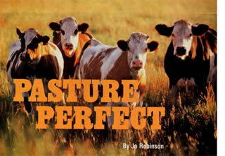

Grass-fed meat and dairy products have less fat and more vitamin E, beta carotene and cancer-fighting fatty acids than factory-farm products. All across the country, farmers and ranchers are returning to this ancient and healthier way of raising animals. Instead of sending them to feedlots to be fattened on grain, farmers are keeping animals home on the range. Cattle graze, lie down, chew their cud, graze - a soothing cycle, repeated day after day - and chickens hunt for seeds and bugs as their ancestors have for eons.
Although raising livestock on pasture is viewed as a radical departure from modern ranching, it is simply a return to a more balanced system. Ranchers boycotting the feedlots are hardworking pioneers whose goal is to make a living selling their products directly to customers or farmer's markets, restaurants and natural food stores. By eliminating some of the middlemen they hope to accomplish what can seem like an impossible dream: making a decent living from a small, family farm. Many of the ranchers have another goal, as well. In addition to feeding their families, they want to create a workable, profitable alternative to agribusiness-as-usual.
After three years of examining this grassroots movement, I've become convinced these farmers are on the right track. Raising animals on pasture is better for the animals, ranchers, environment and health of the consumer. It's one of those rare situations in life that is a win-win-win-win.
I became interested in pasture-based ranching several years ago when I was writingThe Omega Diet with Dr. Artemis P. Simopoulos, an authority on nutrition. The book focuses on the health benefits of a Greek Mediterranean diet and stresses the importance of eating a diet rich in omega-3 fatty acids. Omega-3s have been proven to lower the risk of a long list of diseases including cardiovascular disease, cancer, depression, allergies, auto-immune disorders, obesity and diabetes.
To get the benefits of omega-3s, most people eat fish, flaxseed, walnuts or take fish oil pills. Few realize these lifesaving fats are also found in the products of grazing animals. The reason is simple: Omega-3 fatty acids are created in the green leaves of plants, where they are essential for photosynthesis. When animals eat lots of greens they naturally accumulate more of these essential fats in their bodies. For example, steak from grass-fed cattle has two to six times more omega-3s than a steak from grain-fed cattle according to research at the University of Hawaii. When we eat the steak, the omega-3s are passed on to us. It's often said, "We are what we eat." The truth goes deeper. We are also what our animals eat.
In 1999 researchers discovered another health benefit of grass-fed products: They're the richest known source of another good fat called conjugated linoleic acid or CLA. CLA may be one of our most potent cancer fighters. Animals given very small amounts of CLA - a mere 1.5 percent of their total calories - had a 60 percent reduction in tumor growth in a study published in Cancer Research. CLA may fight cancer in people, as well. Finnish researchers recently found that the more CLA in a woman's diet, the lower her risk of breast cancer. Women who consumed the most CLA had an amazing 60 percent lower risk. According to the research team, "A diet composed of rich foods, particularly cheese, may protect against breast cancer in postmenopausal women."
What the researchers failed to mention is that cheese from a grass fed ruminant has five times more CLA than cheese from a grain-fed animal, according to Tilak Dhiman - a professor in Utah State University's Animal, Dairy and Veterinary Sciences Department. Professor Dhiman estimates that if you are an omnivore you may be able to lower your risk of cancer simply by eating daily one serving of meat, one slice of cheese and one glass of milk from a grass-fed cow. If the products are from an ordinary grain-fed cow, however, you would have to eat five servings of meat, cheese and milk to reap the same benefits.
The nutrient-rich milk from grass-fed cows is not a "designer" food that came about through genetic manipulation or the feeding of exotic ingredients: It's the milk nature provides. Whenever cattle are allowed to eat their truly traditional diet, their dairy products contain high amounts of CLA. When you switch to butter, milk and cheese from grass-fed cows, you are restoring to your diet nutrients factory farming took away.
You are also reducing your intake of something you don't want: saturated fat and calories. Feedlot operators feed grain to ruminants because it makes the animals grow faster and fatter, resulting in highly marbled meat. All that marbling adds a lot of calories. A 6-ounce steak from a grain-fed steer has almost 100 more calories than a 6-ounce steak from a grass-fed steer, according to a report in the Journal of Food Quality. If you eat a typical amount of beef (66.5 pounds a year), eating grass-fed beef would save you 17,733 calories a year without requiring an ounce more of will-power. At that rate you could lose about 6 pounds a year.
Many people confuse pasture-raised animal products with organic products. An organic label does not guarantee that animals spent most of their time on pasture. It simply means the animals had access to pasture, weren't given antibiotics, hormonal implants or injections, and their feed, whether grass, hay or grain - was organically certified. These rules allow organic meat and dairy producers to feed their animals significant amounts of grain, a proven way to speed their growth and increase milk production. The more grain in a ruminant's diet, however, the lower the amount of omega-3s, CLA, vitamin E and betacarotene in their products.
A pasture-based dairy farmer I know hired an independent lab to compare the amount of CLA in his cows' milk with milk from one of the leading organic dairies. The milk from his 100 percent grass-fed cows had 19 milligrams of CLA per gram of butterfat.
The milk from the organic, grain-fed cows had only 5 milligrams of CLA per gram. For optimal nutrition, it's gotta be grass-fed. Some ranchers raise their animals on organically certified pasture, the best of both worlds. When you buy products from one of these farms, you are taking home nutritious food that also meets the strict guidelines of the certifying agency.
In addition to robbing dairy and meat products of vital nutrients, feeding grain to ruminants is stressful to the animals. Ruminants are not designed to eat large amounts of grain. All grazing animals get small amounts of grain during the time of year when grasses go to seed, but the bulk of their diet comes from green leaves. When they are fed large amounts of grain, their guts become unnaturally acidic, which can lead to a condition called subacute acidosis. A calf afflicted with this disorder will kick at its belly, eat dirt, pant, salivate excessively, go off its feed or have attacks of diarrhea.
According to an article in Feedlot magazine, a publication for feedlot operators, this degree of suffering is the inevitable consequence of fattening animals on grain. "Every animal in the feedlot will experience subacute acidosis at least once during the feeding period," the article says. It then reassures feedlot operators this is "an important natural function in adapting to high-grain finishing rations ..." In other words, making calves sick to their stomachs is agribusiness-as-usual. Subacute acidosis can be much more than a bellyache, however. If the condition goes untreated, the animal will develop an ulcerated stomach and a diseased liver. It might even die.
I am an omnivore and eat a considerable amount of meat and dairy products. But I don't want animals to suffer needlessly before they are slaughtered. I am happy to say the beef I now eat comes from an Oregon family who raises about 40 head of cattle on 120 acres of organic pasture. When the grass is growing, the animals get all their nutrients from grasses, clover and a random assortment of green plants. In the winter when the grass is dormant, the cattle eat organic hay plus a side helping of kelp for added vitamins and minerals. They are never treated with hormones, antibiotics, acid buffers or chemical additives. I have the privilege of eating meat the way nature makes it.
Ruminants are not the only animals being raised on the new pasture-based farms. Chickens, turkeys, pigs, rabbits and ducks are also being sprung from their cages and sent out to pasture. Some farmers raise five or six different species on the same pasture, bringing to mind the old family farm, replete with the clucking of hens, mooing of cows, grunting of pigs and bleating of sheep.
Nonruminants cannot live on grass alone, however. They lack the highly specialized digestive tract that would allow them to convert a diet high in roughage and low in energy into a quality meal. They need some feed in addition to grass, typically a mixture of soy and grain. But they, too, can get a significant portion of their calories from grass, ranging from 25 percent for chickens to 50 percent for ducks. The more grass the animals eat, the more omega-3 fatty acids, beta carotene, and vitamin E in their meat and eggs.
Like ruminants, poultry and pigs raised on pasture also get to enjoy a less stressful life. This is in stark contrast to life in a confinement operation. In the worst facilities, horrific abuses can occur.
Last year, I toured a chicken "grow-out" operation - the industry term for a facility that raises chickens from day-old chicks to maturity. The husband and wife who ran the operation were contract workers for a giant conglomerate poultry producer. The couple dutifully followed all the rules handed down by the conglomerate. Indeed, they ran such a tight operation the conglomerate had designated them the second-best grow-out operation in the state. Yet if consumers had to walk through the shed before buying their chicken, my guess is that sales would plummet.
I toured the operation just days before the birds were ready for market. There were 10,000 chickens crammed into each long shed, taking up every inch of floor space. When I looked down the shed, I saw a continuous carpet of white-feathered birds. I couldn't take a step without having to nudge chickens out of the way.
The chickens were sitting on a deep bed of litter. It had been fresh when the newly hatched chicks arrived, but it had not been changed in the seven weeks it had taken them to reach market size. The day I visited, the level of ammonia had risen to almost intolerable levels. I felt as if my head had been plunged into a diaper pail. The chickens were breathing air that was less than 6 inches from the litter, so the fumes must have been far worse for them.
Although I found the whole scene repellent, the U.S. government and the poultry industry do not consider these conditions abusive. It's simply the most cost-effective way to raise chickens. In a matter of days, those very birds would be slaughtered, plucked, cut into pieces, wrapped in glimmering plastic and affixed with a label proclaiming they were "fresh from the farm" and "Northwest grown."
I no longer buy commercially raised poultry, no matter how attractive the price. I won't buy animals that have been forced to breathe toxic amounts of ammonia. Fortunately I have an alternative. The chickens and turkeys I now eat come from a nearby farm where the birds are raised outdoors on organic pasture. As in nature, the birds are allowed the dignity of breathing fresh air and foraging for greens. Equally important, they have room to chase bugs, preen and sprawl outside on a sunny day. In other words, they get to be chickens. I pay twice the grocery store price for these plump, juicy birds, and I consider it a bargain.
Raising animals on pasture is far better for the environment. One reason is obvious. In a feedlot, lots of animals deposit their manure on a small amount of bare land. When it rains, manure leaks from the piles and pollutes the nearby land and groundwater. When the manure piles up too high, it has to be trucked from the feedlot and deposited elsewhere. Given lax government regulations and the high cost of transportation, "elsewhere" is often the closest available patch of land. Manure in small quantities is an excellent fertilizer; the lush green grass on pasture-based ranches is a testimony to this fact. But in excessive amounts, manure acts as a pollutant, leaching nitrogen and phosphorous into the soil, surface water and groundwater. It is common for land surrounding large feedlot operations to be burdened with too much manure.
Some of the environmental benefits of pasturing animals are less obvious. According to Dr. Rita Schenck from the Institute of Environmental Research and Education, raising ruminants on grass may reduce greenhouse gasses. She says land kept in pasture is carpeted with plants, many of them growing year-round. As the grass grows, it draws carbon dioxide from the air and deposits it safely in the soil, a process called "carbon sequestration." Her calculations indicate a pasture-based farm may contribute to cleaner air and a healthier planet.
So where do you find environmentally friendly, animal-friendly, highly nutritious grass-fed products if you can't grow your own? Probably not - yet - in your local grocery store. Perhaps not even in a natural food store or co-op. What you will find in these outlets are "natural" and "organic" animals products, typically from animals fed a significant amount of grain. One of the largest suppliers of "natural" meat finishes their animals in feedlots on a grain diet. The main distinction between this "natural" meat and supermarket meat is the "natural" animals are not treated with hormones and antibiotics.
You may have to get your grass-fed products directly from a local farmer, farmer's market or from one of the larger suppliers willing to ship products. There are pasture-based farms in every U.S. state and Canadian province. You'll probably find a supplier within a pleasant country drive of your home. For a comprehensive list of suppliers, visit www.eatwild.com. You'll also find lots more information about the benefits of pasture-based ranching.
For the most devout customers, driving a hundred miles to pick up their food is no obstacle. Recently a farmer who sells eggs from pastured hens told a customer in a nearby city he was out of fresh eggs. "I only have a half dozen left," he said. The customer exclaimed, "Don't sell them! I'll be there in an hour and a half!" Meat and dairy producers spend tens of millions of dollars each year in hope of generating this kind of loyalty. All it takes is a product that resonates with the customer's soul.
As awareness of the benefits of grass-fed products spreads across the country, more and more farmers will have the courage to keep their animals on the green grasses of home. The best way to support this movement and increase the availability of the products is to try some yourself. If you find them to your liking, tell a few of your friends. Good news travels fast.
Older dairy cows produce more cancer fighting conjugated linoleic acid (CLA) than younger cows, according to Professor Tilak Dhiman of Utah State University. Specifically, a cow that has gone through four lactations (cycles of milk production) produces more CLA than she did when she was younger. In confinement dairies the typical cow is slaughtered after only two lactations - another reason the milk you buy in the supermarket is relatively low in this beneficial fatty acid. Grass-fed cattle can remain healthy and productive for as long as 13 lactations.
Outbreaks of deadly E. coli food poisoning have become more common in recent years and grain-feeding may be one of the reasons. Researchers from Cornell University determined grainfed cattle have approximately 300 times more E. coli in their guts than grassfed cattle. Worse yet, the E. coli in grain-fed animals is more likely to make us sick. Grain-feeding makes a ruminant's gut more acidic. E. coli that cannot tolerate this heightened acidity die off, allowing acid-resistant bacteria to thrive and multiply. Unfortunately our frontline defense against E. coli is the natural acidity of our own digestive system. E. coli from grain-fed animals are already accustomed to this level of acidity, so they are more likely to lodge in our intestines and make us sick. Raising animals on pasture keeps the E. coli count relatively low and keeps the bacteria vulnerable to our bodies' natural defenses.
|
 FILE PHOTO Grass-fed cattle are easier on the environment and provide healthier milk and meat than their grain-fed counterparts. |
SOURCE: INT J VITAM NUTR RES 63, NO.3: 229-33 Portable chicken coops enable farmers to move from one area of pasture to another. |
SK DUCKET, ET AL, JOURNAL OF ANIMAL SCIENCE(1993) |
|
SOURCE: J. ANIM SCI71, NO.8: 2079-88 |
1997 STUDY BY ALABAMA AGRICULTURAL EXPIREMENT STATION |
DAVID CAVAGNARO |